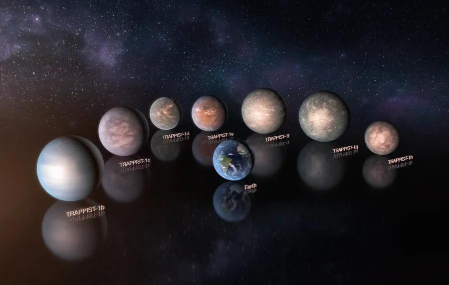

5. Februar 2018
TRAPPIST-1 f und g: Hubble prüft die Planeten der habitablen Zone
Drei der sieben Planeten von TRAPPIST-1 – e, f und g – liegen in der habitablen Zone, in der flüssiges Wasser an der Oberfläche möglich wäre. Das Hubble-Weltraumteleskop untersuchte die Planeten d, e, f und g. Für d, e und f schließen die Daten eine wolkenfreie, wasserstoffreiche Atmosphäre aus; für g war das nicht möglich.
Das stützt die Annahme, dass es sich um Gesteinsplaneten und nicht um kleine Gasplaneten handelt. Eine am selben Tag vorgestellte Studie bestimmte die Dichten der Planeten genauer. Danach sind f, g und h so weit vom Stern entfernt, dass Wasser an ihrer Oberfläche zu Eis gefroren sein könnte.
Quellen: ESA/Hubble: "Hubble delivers first insight into atmospheres of potentially habitable planets orbiting TRAPPIST-1." (heic1802), 05.02.2018; ESO: "TRAPPIST-1 Planets Probably Rich in Water." (eso1805), 05.02.2018; ESA/Hubble: "The habitable zone in the TRAPPIST-1 system." (image page heic1802d, names e, f, g as habitable-zone planets), 05.02.2018